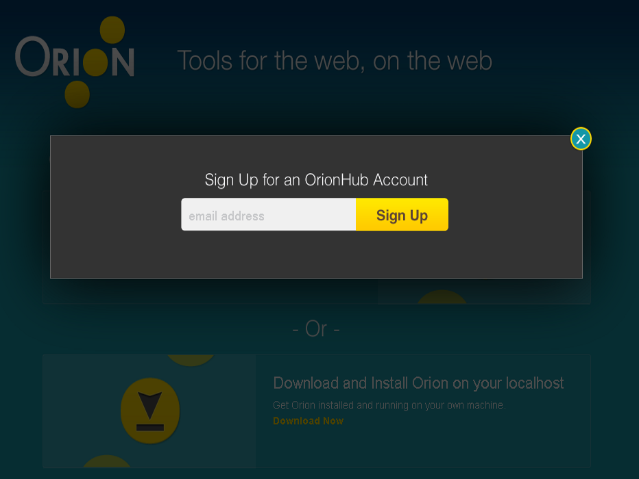
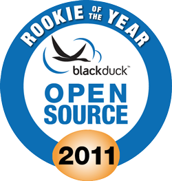

Developing for Web, In Web
Eclipse Orion
Szymon Brandys, Małgorzata Janczarska
September, 2012
Szymon Brandys, Małgorzata Janczarska
September, 2012
Orion project is about software development in a browser (editing, navigation, search, test, source control)
Page = Task + Resource


provider.registerServiceProvider("orion.edit.command", {
run : function(text) {
return text.toUpperCase();
}
}, {
name : "UPPERCASE",
img : "/images/gear.gif",
key : [ "u", true ]
});